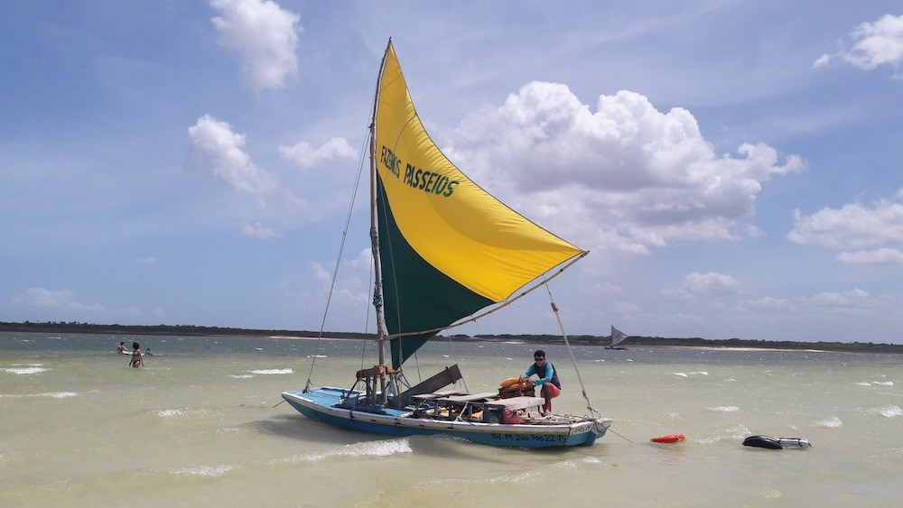
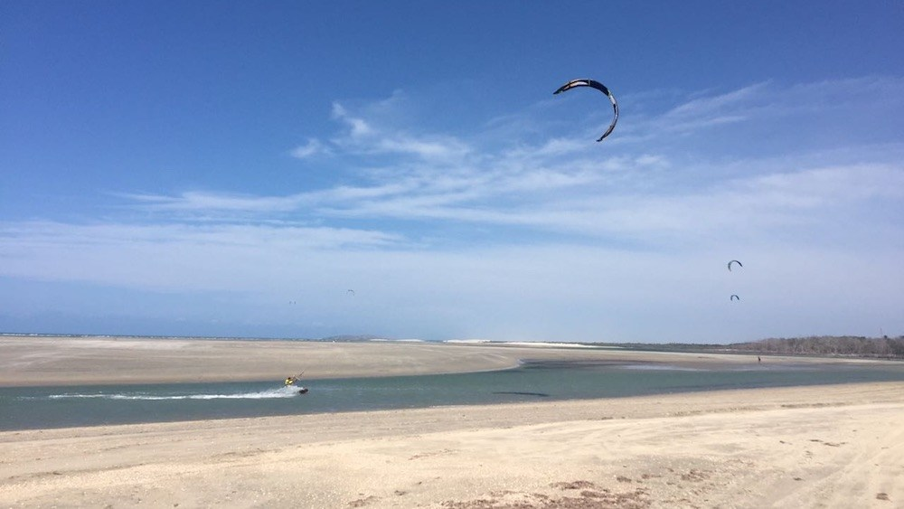
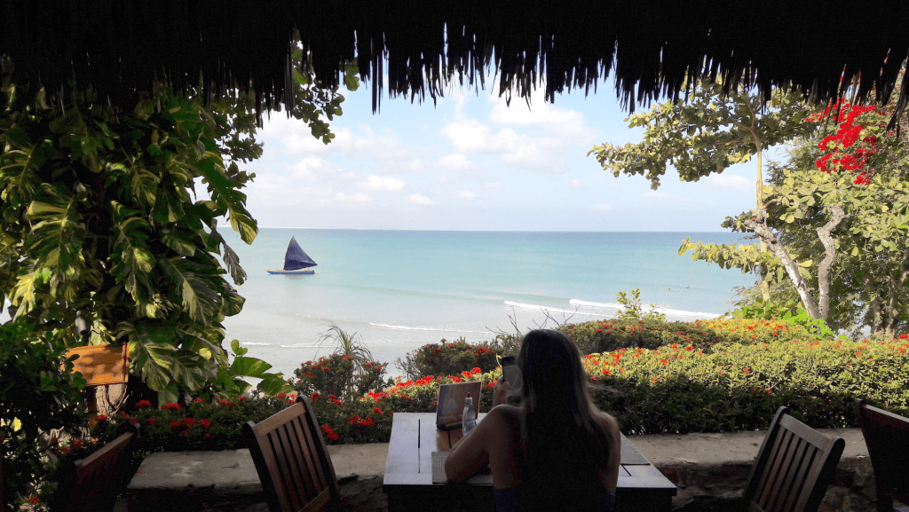

Localização
Localizada no município de Jijoca de Jericoacoara, no estado do Ceará, no Brasil. Está localizada a 300 km a oeste da capital do estado, Fortaleza.

Jericoacoara
clique em saiba mais e confira as coisas que tornam esse lugar um dos pontos turísticos mais visitados.
A indicação de Jericoacoara no território e história do Ceará, vem bem antes da criação do distrito de Acaraú ou da descoberta deste pelo turismo internacional em meados da década de 1970. Este já era indicado nas cartas geográficas do século XVII.
Área conhecida como parte das terra dos índios Tremembé, foi local de instalação do vilarejo e forte de Nossa Senhora do Rosário, que serviu como base de apoio aos portugueses nas batalhas contra os franceses que ocupavam o Maranhão.
Em 1984, o governo brasileiro, por ato de seu presidente, o General João Figueiredo, determinou área de Jericoacoara com sendo de Área de Proteção Ambiental. Em 1991, por força da lei nº 11.796, Jijoca, distrito de Cruz, tornou-se município autônomo, anexado ao seu território a praia de Jericoacoara e passando a denominar-se Jijoca de Jericoacoara. Em 1998, a energia elétrica passou a ser provida por uma rede subterrânea, substituindo os geradores que iluminavam apenas alguns pontos da aldeia de Jericoacoara.
Tropical quente com pluviometria média de 793 mm, com chuvas concentradas de janeiro a maio. Hidrografia e recursos hídricos Além do oceano Atlântico, o município tem as seguintes fontes hidrográficas: Riachos: Guriú, Doce, Córrego do Mourão, do Paraguai, de Dentro, dos Salvianos e da Forquilha Lagoas: da Jijoca e das Pedras.
O turismo em Jijoca de Jericoacoara, principal fonte de renda do município, é alimentado por diversos fatores: as belezas naturais, o aspecto selvagem e pitoresco de um lugar pouco tocado pela tecnologia além das condições propícias para o windsurf, o sandboard e o kitesurf.
O turismo em Jijoca de Jericoacoara, principal fonte de renda do município, é alimentado por diversos fatores: as belezas naturais, o aspecto selvagem e pitoresco de um lugar pouco tocado pela tecnologia além das condições propícias para o windsurf, o sandboard e o kitesurf.
Praias da Lagoa do Paraíso: Pois é, a melhor praia de Jericoacoara é uma lagoa. E que lagoa! A Lagoa do Paraíso é o principal cartão-postal e uma atração imperdível para quem vai a Jeri. Indo de buggy, os motoristas geralmente dão duas opções de barracas para você passar a tarde. A mais famosa e bem estruturada delas é a Alchymist Beach Club, que vem enfrentando problemas com a justiça. Em frente a esse luxuoso restaurante de praia, está um dos cenários mais incríveis do Brasil: a praia da Lagoa do Paraíso, de areias brancas e águas mansas e cristalinas, onde estão redes pra gente se deitar dentro da lagoa. Não menospreze o poder de descansar com a bunda na água, é algo incrível e que todo mundo merece viver um dia. Na praia da Lagoa do Paraíso, além da estrutura da “barraca” de praia, dá pra praticar vários esportes e velejar por um preço bem modesto. Dicas de como chegar, detalhes e muitas fotos estão no post Lagoa do Paraíso, a mais bonita de Jericoacoara.
Praias isoladas do Parque Nacional de Jericoacoara: Se a Praia Principal de Jeri já é limpa e de beleza incontestável, imagine então as praias ao redor da vila, sem a presença de turistas o dia inteiro. São praias praticamente desertas, que têm a calmaria interrompida somente pelos buggys cruzando as areias e pelos kites, correndo ainda mais rápido pelo mar. Onde estão essas praias em Jericoacoara? As mais bonitas estão para o lado oeste da vila, no sentido de Tatajuba. É por onde os buggys passam a caminho do mangue seco e da Lagoa da Torta. Como chegar: eu fui de buggy e pedi para o motorista ir parando pelo caminho. Melhor do que curtir a imensa faixa de areia, é parar nos braços do mar, formando piscinas naturais de águas rasas (em sua maioria) e cristalinas. Paradisíaco.
Praia Principal de Jericoacoara: É a praia exatamente em frente à vila, onde chega a Rua Principal de Jericoacoara. Tem as vantagens de uma praia urbana, com o visual de uma praia paradisíaca. Eu explico. Porque é urbana: tem bares pé na areia, com cadeiras de praia e serviço de mesa, lojas próximas, escolas de wind e kitesurf e gente por perto dia e noite, além de ter chance de ser pertinho do seu hotel, caso você tenha escolhido bem onde ficar em Jericoacoara. Porque é paradisíaca: as areias são claras e limpas, assim como a água do mar, de um azul cristalino e transparente. Ondas suaves e ventos ideais para a prática de esportes náuticos, especialmente kitesurf. E eles enchem o mar o dia inteiro, especialmente no fim de tarde. E o pôr do sol é espetacular, principalmente se você subir na Duna do Pôr do Sol, que fica ali na extremidade da praia.
Praias da Lagoa do Paraíso:
Praias isoladas do Parque Nacional de Jericoacoara:
Praia Principal de Jericoacoara:
Localizada no município de Jijoca de Jericoacoara, no estado do Ceará, no Brasil. Está localizada a 300 km a oeste da capital do estado, Fortaleza.